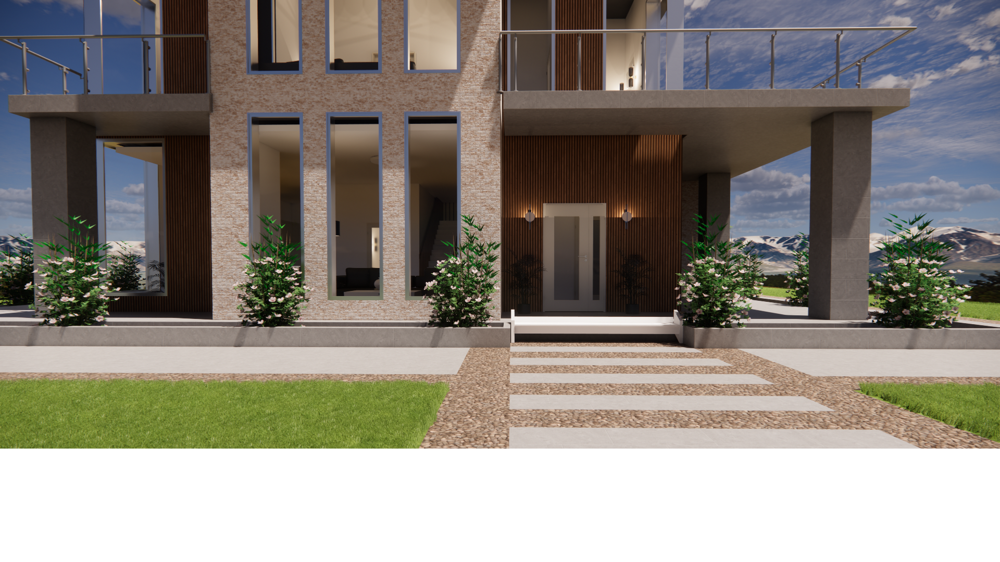
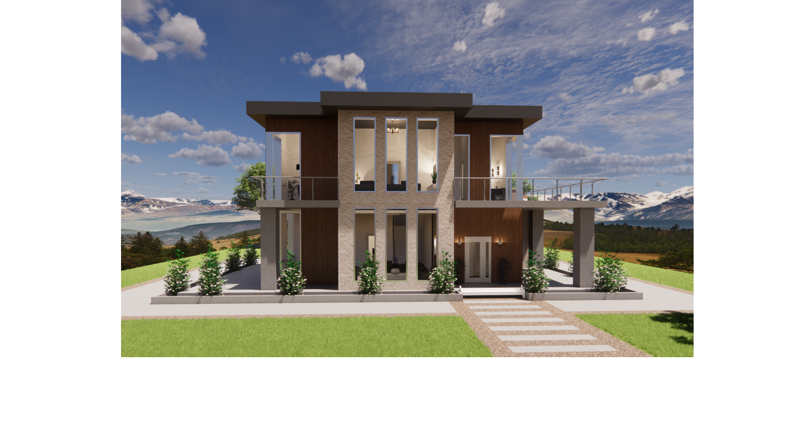
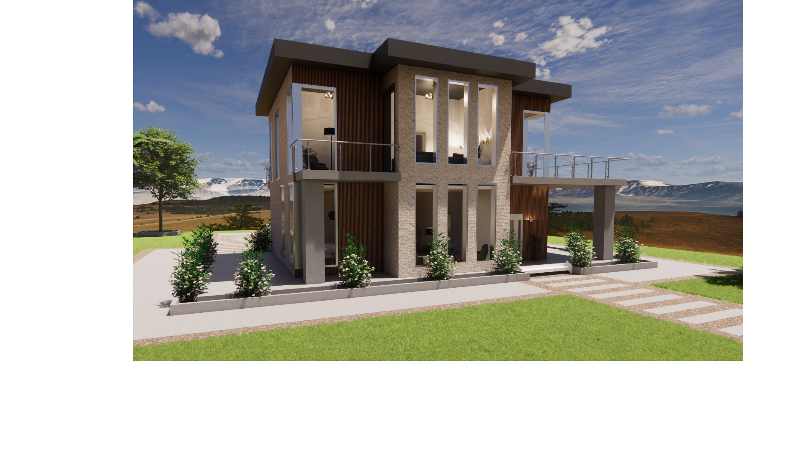
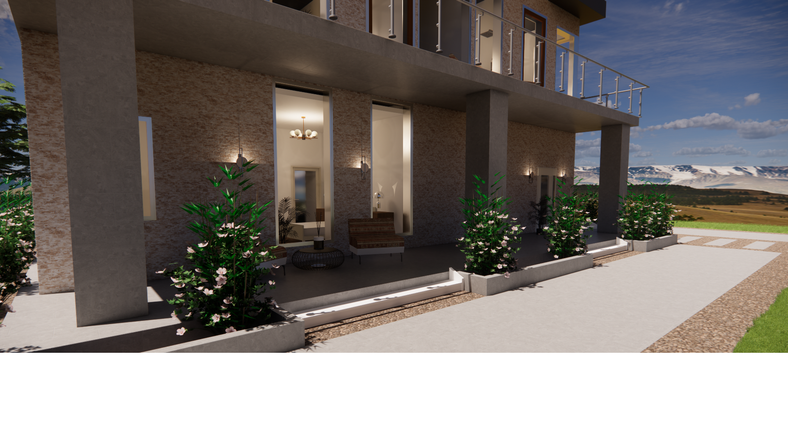
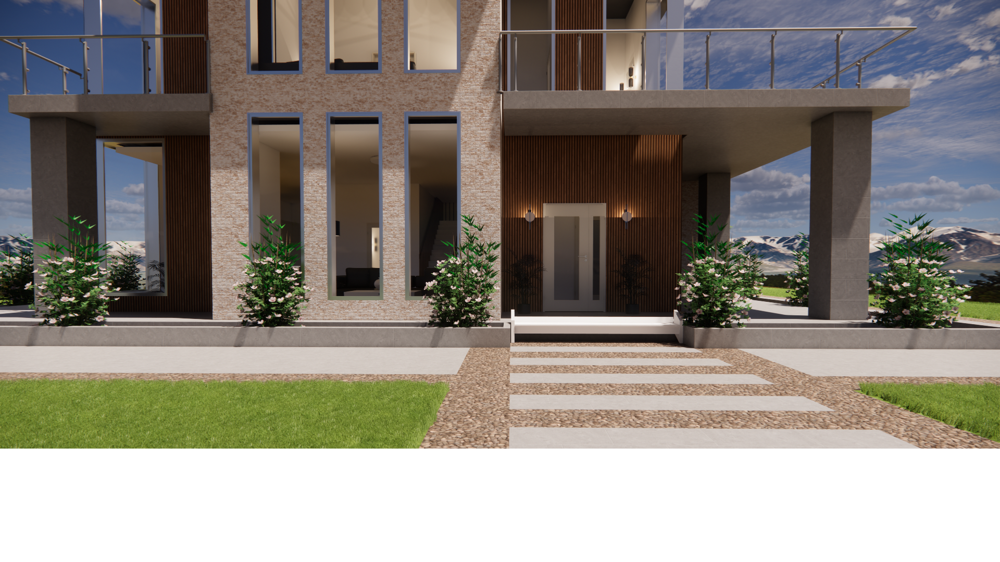
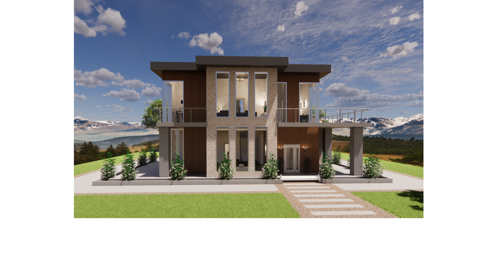
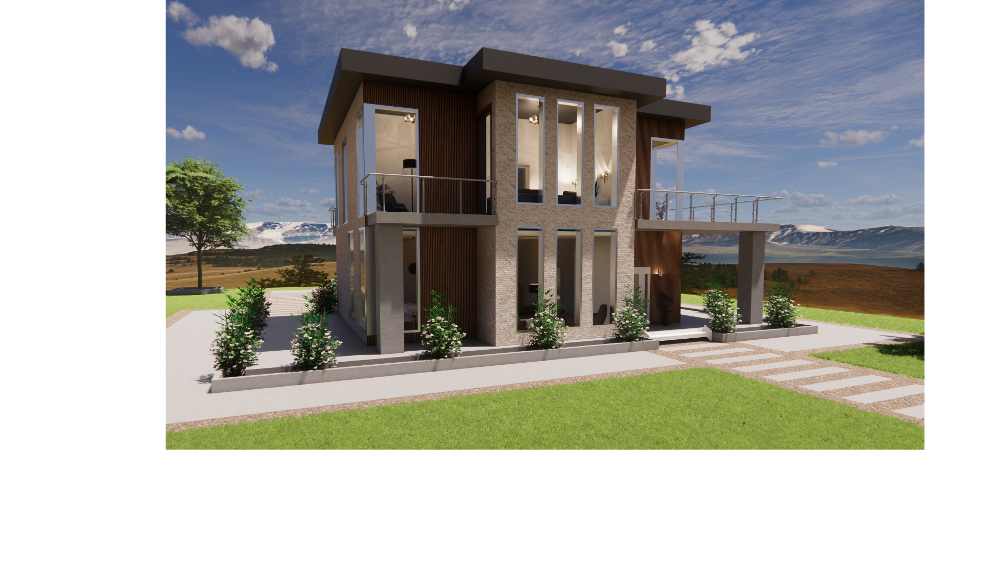
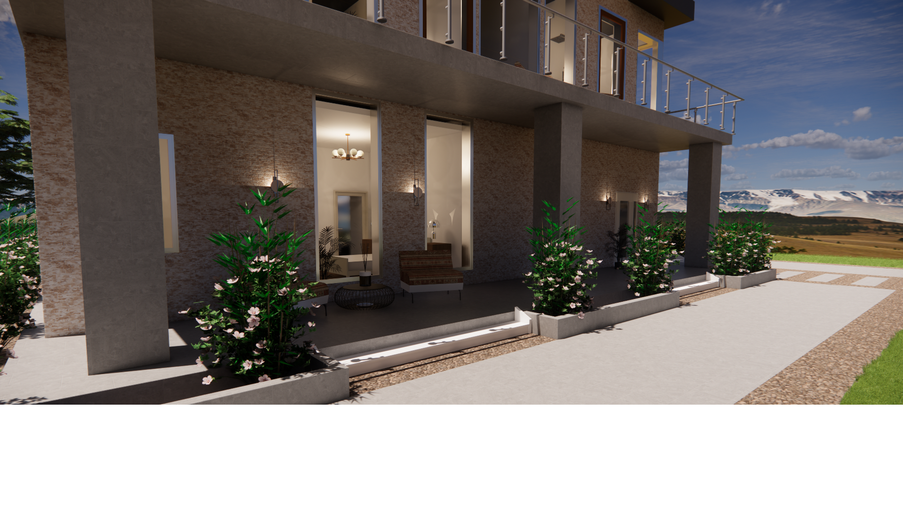

Featured Projects

Urban Office Oasis Concept
Fostering collaboration and well-being while balancing contemporary elements with warm textures.


Ornamented Minimalism Concept
Tea is important to Turkish culture, and this design of a tea room showcases a modern rendition of the authentic and inviting space that reflects the rich cultural heritage of Turkey. The space fosters socialization and reflects warmth and hospitality. The tranquil yet vibrant color palette, in addition to traditional Turkish motifs, celebrates the interaction surrounding tea and Turkish traditions. The space offers visitors a modernized and immersive cultural experience.

 







Refined Sanctuary Concept
This design concept and materiality is a harmonious blend of modern elements and tranquility, designed to offer a clean serene retreat from the chaos of daily life. The base design was heavily inspired by a modern residential floor plan and adjusted for the specific needs of the users With a focus on minimalist sophistication, natural materials, and indoor-outdoor connections, the space embodies comfort and refinement.